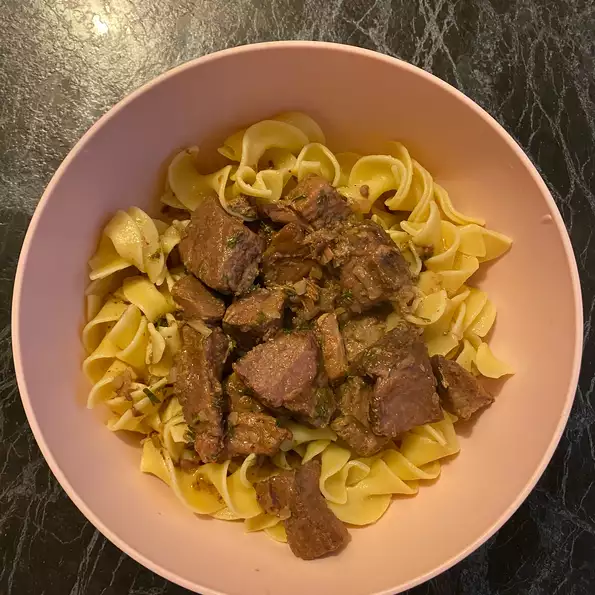

Butter Beef

A delicious dish that you will surely love it.
Ingredients
- 3 pounds cubed beef stew meat
- ½ cup butter
- 1 (1 ounce) envelope dry onion soup mix
Directions
- Step 1 - Place beef and butter in a slow cooker and sprinkle onion soup mix over top.
- Step 2 - Cover, and cook until meat is tender, on Low for 8 hours, or on High for 4 to 5 hours.
Stir once or twice during cook time.